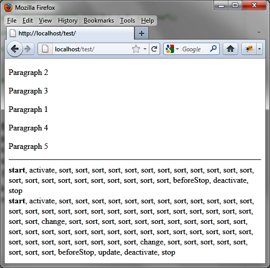
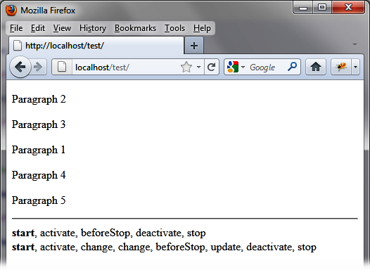
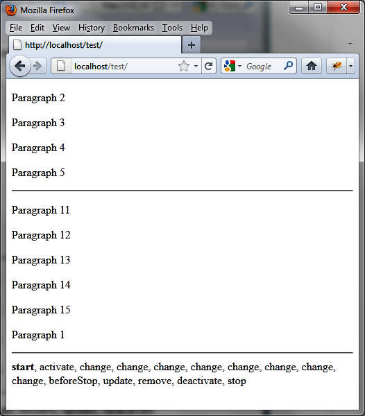
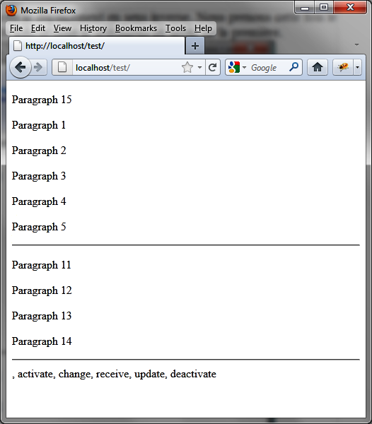
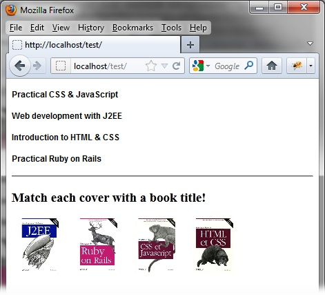
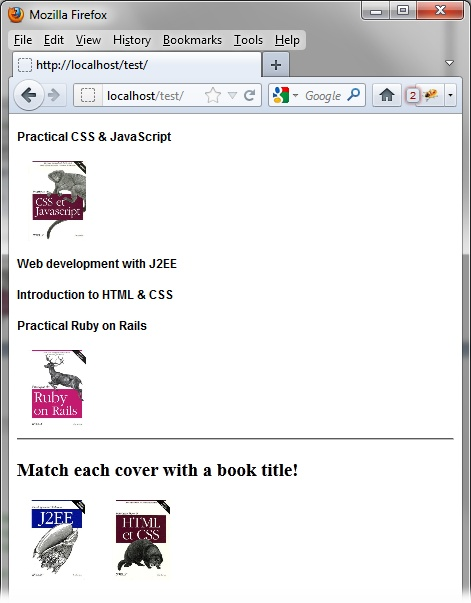
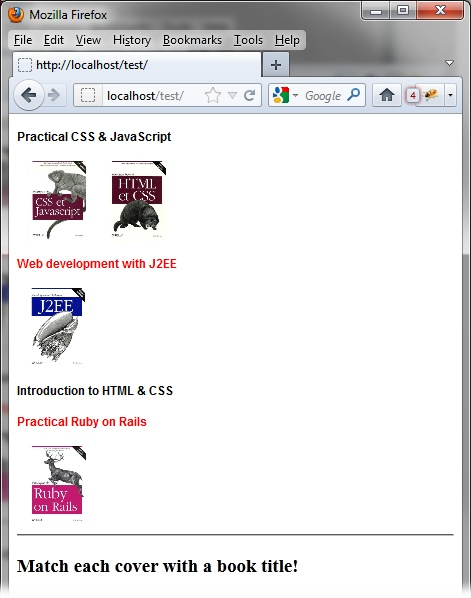

{% include JB/setup %}
{% raw %}
<div>
<div class="book" title="Examples of Using the Permutation Mechanism"><div class="book"><div class="book"><div class="book"><h1 class="title2"><a id="examples_of_using_the_permutation_mechan" class="calibre1"></a>Examples of Using the Permutation Mechanism</h1></div></div></div><p class="calibre7">Here are some examples of using the permutation mechanism.</p><div class="book" title="Displaying the Order in Which Events Appear"><div class="book"><div class="book"><div class="book"><h2 class="title5"><a id="displaying_the_order_in_which_events_app" class="calibre1"></a>Displaying the Order in Which Events Appear</h2></div></div></div><p class="calibre7">Items can be moved between two lists or within a single list.
      First, we’ll create a script that allows users to move items within a
      list, then we’ll create a script that allows movement between
      lists.</p><div class="book" title="When swapping in one list"><div class="book"><div class="book"><div class="book"><h3 class="title6"><a id="when_swapping_in_one_list" class="calibre1"></a>When swapping in one list</h3></div></div></div><p class="calibre7">The goal in this example is to display the order of the events
        described above, for a single list of items. For this, we display five
        swappable paragraphs and a <code class="literal">&lt;span&gt;</code> element containing the name of
        events. A line break is added after each <code class="literal">stop</code> event:</p><a id="I_programlisting12_d1e12105" class="firstname"></a><pre class="programlisting">&lt;script src = jquery.js&gt;&lt;/script&gt;
&lt;script src = jqueryui/js/jquery-ui-1.8.16.custom.min.js&gt;&lt;/script&gt;

&lt;link rel=stylesheet type=text/css
      href=jqueryui/css/smoothness/jquery-ui-1.8.16.custom.css /&gt;

&lt;style type=text/css&gt;
  p.ui-sortable-helper {
    color : red;
  }
&lt;/style&gt;

&lt;div id=div1&gt;
  &lt;p&gt; Paragraph 1 &lt;/p&gt;
  &lt;p&gt; Paragraph 2 &lt;/p&gt;
  &lt;p&gt; Paragraph 3 &lt;/p&gt;
  &lt;p&gt; Paragraph 4 &lt;/p&gt;
  &lt;p&gt; Paragraph 5 &lt;/p&gt;
&lt;/div&gt;

&lt;hr /&gt;

&lt;span id=result&gt;&lt;/span&gt;

&lt;script&gt;

$("#div1").sortable ({
  revert : 1000,
  start : function (event, ui)
  {
    $("span#result").html ($("span#result").html () + "&lt;b&gt;start&lt;/b&gt;");
  },
  stop : function (event, ui)
  {
    $("span#result").html ($("span#result").html () + ", stop &lt;br /&gt;");
  },
  sort : function (event, ui)
  {
    $("span#result").html ($("span#result").html () + ", sort");
  },
  change : function (event, ui)
  {
    $("span#result").html ($("span#result").html () + ", change");
  },
  beforeStop : function (event, ui)
  {
    $("span#result").html ($("span#result").html () + ", beforeStop");
  },
  update : function (event, ui)
  {
    $("span#result").html ($("span#result").html () + ", update");
  },
  remove : function (event, ui)
  {
    $("span#result").html ($("span#result").html () + ", remove");
  },
  receive : function (event, ui)
  {
    $("span#result").html ($("span#result").html () + ", receive");
  },
  activate : function (event, ui)
  {
    $("span#result").html ($("span#result").html () + ", activate");
  },
  deactivate : function (event, ui)
  {
    $("span#result").html ($("span#result").html () + ", deactivate");
  }
});

&lt;/script&gt;</pre><p class="calibre7">After two displacements are made for the first paragraph, you
        will get a display similar to the one shown in <a class="ulink" href="ch12s05.html#events_triggered_when_switching" title="Figure 12-4. Events triggered when switching">Figure 12-4</a>. The first displacement
        has not resulted in a permutation, unlike the second (<code class="literal">update</code> event). The <code class="literal">change</code> events in this second displacement
        show that two elements have successively switched places with the
        first paragraph, leading to the final position of the element.</p><p class="calibre7">In addition, we see that most of the displayed events are
        <code class="literal">sort</code> events, which correspond to
        mouse movements.</p><div class="book"><div class="figure"><a id="events_triggered_when_switching" class="firstname"></a><div class="book"><div class="book"><a id="I_mediaobject12_d1e12125" class="firstname"></a></div></div><p class="title4">Figure 12-4. Events triggered when switching</p></div></div><p class="calibre7">If we remove the display of the <code class="literal">sort</code> event, the window display is easier to
        interpret (<a class="ulink" href="ch12s05.html#the_sort_events_no_longer_appear_in_the" title="Figure 12-5. The sort events no longer appear in the list">Figure 12-5</a>):</p><a id="I_programlisting12_d1e12137" class="firstname"></a><pre class="programlisting">// sort : function (event, ui)
// {
//   $("span#result").html ($("span#result").html () + ", sort");
// },</pre><div class="figure"><a id="the_sort_events_no_longer_appear_in_the" class="firstname"></a><div class="book"><div class="book"><a id="I_mediaobject12_d1e12142" class="firstname"></a></div></div><p class="title4">Figure 12-5. The sort events no longer appear in the list</p></div><p class="calibre7">Paragraphs moved in this example are in a single list. Let’s see
        how to allow movement between two lists.</p></div><div class="book" title="When switching between two lists"><div class="book"><div class="book"><div class="book"><h3 class="title6"><a id="when_switching_between_two_lists" class="calibre1"></a>When switching between two lists</h3></div></div></div><p class="calibre7">We take the same example as above, but this time, we’ll use two
        lists. We allow swapping items between two lists, but also in the same
        list. For simplicity, we only observe the events from the first
        list:</p><a id="I_programlisting12_d1e12154" class="firstname"></a><pre class="programlisting">&lt;script src = jquery.js&gt;&lt;/script&gt;
&lt;script src = jqueryui/js/jquery-ui-1.8.16.custom.min.js&gt;&lt;/script&gt;

&lt;link rel=stylesheet type=text/css
      href=jqueryui/css/smoothness/jquery-ui-1.8.16.custom.css /&gt;

&lt;style type=text/css&gt;
  p.ui-sortable-helper {
    color : red;
  }
&lt;/style&gt;

&lt;div id=div1&gt;
  &lt;p&gt; Paragraph 1 &lt;/p&gt;
  &lt;p&gt; Paragraph 2 &lt;/p&gt;
  &lt;p&gt; Paragraph 3 &lt;/p&gt;
  &lt;p&gt; Paragraph 4 &lt;/p&gt;
  &lt;p&gt; Paragraph 5 &lt;/p&gt;
&lt;/div&gt;

&lt;hr /&gt;

&lt;div id=div2&gt;
  &lt;p&gt; Paragraph 11 &lt;/p&gt;
  &lt;p&gt; Paragraph 12 &lt;/p&gt;
  &lt;p&gt; Paragraph 13 &lt;/p&gt;
  &lt;p&gt; Paragraph 14 &lt;/p&gt;
  &lt;p&gt; Paragraph 15 &lt;/p&gt;
&lt;/div&gt;

&lt;hr /&gt;

&lt;span id=result&gt;&lt;/span&gt;

&lt;script&gt;

$("#div1").sortable ({
  revert : 1000,
  <span class="firstname"><strong class="userinput">connectWith : "#div2",</strong></span>
  start : function (event, ui)
  {
    $("span#result").html ($("span#result").html () + "&lt;b&gt;start&lt;/b&gt;");
  },
  stop : function (event, ui)
  {
    $("span#result").html ($("span#result").html () + ", stop &lt;br /&gt;");
  },
// sort : function (event, ui)
// {
//   $("span#result").html ($("span#result").html () + ", sort");
// },
  change : function (event, ui)
  {
    $("span#result").html ($("span#result").html () + ", change");
  },
  beforeStop : function (event, ui)
  {
    $("span#result").html ($("span#result").html () + ", beforeStop");
  },
  update : function (event, ui)
  {
    $("span#result").html ($("span#result").html () + ", update");
  },
  remove : function (event, ui)
  {
    $("span#result").html ($("span#result").html () + ", remove");
  },
  receive : function (event, ui)
  {
    $("span#result").html ($("span#result").html () + ", receive");
  },
  activate : function (event, ui)
  {
    $("span#result").html ($("span#result").html () + ", activate");
  },
  deactivate : function (event, ui)
  {
    $("span#result").html ($("span#result").html () + ", deactivate");
  }
});

$("#div2").sortable ({
  revert : 1000,
  <span class="firstname"><strong class="userinput">connectWith : "#div1"</strong></span>
});

&lt;/script&gt;</pre><p class="calibre7">The two lists are connected to each other by means of the
        <code class="literal">connectWith</code> option. We do not
        display <code class="literal">sort</code> events because there
        are too many!</p><p class="calibre7"><a class="ulink" href="ch12s05.html#events_triggered_when_switching_between" title="Figure 12-6. Events triggered when switching between two lists">Figure 12-6</a> shows
        the sequence of events shown when we move the first paragraph in the
        second list. The <code class="literal">change</code> events were
        held in the permutations in both the first and second lists. Notice
        the <code class="literal">remove</code> event after <code class="literal">update</code>, showing that the item was removed
        from that list. If the second list also observed the events, it would
        have received the <code class="literal">receive</code>
        event.</p><div class="figure"><a id="events_triggered_when_switching_between" class="firstname"></a><div class="book"><div class="book"><a id="I_mediaobject12_d1e12188" class="firstname"></a></div></div><p class="title4">Figure 12-6. Events triggered when switching between two lists</p></div><p class="calibre7">In <a class="ulink" href="ch12s05.html#events_triggered_in_the_permutation_of_a" title="Figure 12-7. Events triggered in the permutation of an element of the second list to the first">Figure 12-7</a>,
        we are moving in the opposite direction. This time, we take the last
        element of the second list and move it to the beginning of the first
        list.</p><div class="figure"><a id="events_triggered_in_the_permutation_of_a" class="firstname"></a><div class="book"><div class="book"><a id="I_mediaobject12_d1e12200" class="firstname"></a></div></div><p class="title4">Figure 12-7. Events triggered in the permutation of an element of the
          second list to the first</p></div><p class="calibre7">The <code class="literal">start</code> and <code class="literal">stop</code> events are not received by the first
        list, but it receives <code class="literal">activate</code> and
        <code class="literal">deactivate</code>. In addition, a single
        <code class="literal">change</code> event is received, followed
        by <code class="literal">receive</code> and <code class="literal">update</code>.</p></div></div><div class="book" title="Dropping any Element in the List"><div class="book"><div class="book"><div class="book"><h2 class="title5"><a id="dropping_any_element_in_the_list" class="calibre1"></a>Dropping any Element in the List</h2></div></div></div><p class="calibre7">In this section, we’ll work with examples that allow you to create
      and manage the ability to drop elements in a list.</p><div class="book" title="Inserting images into a list of titles"><div class="book"><div class="book"><div class="book"><h3 class="title6"><a id="inserting_images_into_a_list_of_titles" class="calibre1"></a>Inserting images into a list of titles</h3></div></div></div><p class="calibre7">So far, we have studied only the case where items were swapped
        between lists. Let’s look at what happens if you want to insert an
        item that is not from another list.</p><p class="calibre7">Here, we’ll display the titles of some books in a list. This
        list will contain swappable elements. Then, in another part of the
        page, we’ll display the covers of these books (see <a class="ulink" href="ch12s05.html#associating_a_book_cover_with_each_title" title="Figure 12-8. Associating a book cover with each title in the list">Figure 12-8</a>). The goal is to
        move the covers into the list containing the titles of the
        books.</p><div class="figure"><a id="associating_a_book_cover_with_each_title" class="firstname"></a><div class="book"><div class="book"><a id="I_mediaobject12_d1e12246" class="firstname"></a></div></div><p class="title4">Figure 12-8. Associating a book cover with each title in the list</p></div><p class="calibre7">You have to move each image to a book title. <a class="ulink" href="ch12s05.html#the_book_covers_are_inserted_into_the_li" title="Figure 12-9. The book covers are inserted into the list of titles">Figure 12-9</a> shows two of the
        covers matched with their titles.</p><div class="figure"><a id="the_book_covers_are_inserted_into_the_li" class="firstname"></a><div class="book"><div class="book"><a id="I_mediaobject12_d1e12258" class="firstname"></a></div></div><p class="title4">Figure 12-9. The book covers are inserted into the list of titles</p></div><a id="I_programlisting12_d1e12263" class="firstname"></a><pre class="programlisting">&lt;script src = jquery.js&gt;&lt;/script&gt;
&lt;script src = jqueryui/js/jquery-ui-1.8.16.custom.min.js&gt;&lt;/script&gt;

&lt;link rel=stylesheet type=text/css
      href=jqueryui/css/smoothness/jquery-ui-1.8.16.custom.css /&gt;

&lt;style type=text/css&gt;
  h4 {
    font-family : arial;
    font-size : 12px;
  }
  .placeholder {
    height : 80px;
  }
&lt;/style&gt;

&lt;div id=titles&gt;
  &lt;h4&gt; Practical CSS &amp; JavaScript &lt;/h4&gt;
  &lt;h4&gt; Web development with J2EE &lt;/h4&gt;
  &lt;h4&gt; Introduction to HTML &amp; CSS &lt;/h4&gt;
  &lt;h4&gt; Practical Ruby on Rails &lt;/h4&gt;
&lt;/div&gt;

&lt;hr /&gt;

&lt;h3&gt; Match each cover with a book title! &lt;/h3&gt;
&lt;div id=covers&gt;
  &lt;img src=images/j2ee.jpg height=80 /&gt;
  &lt;img src=images/rails.jpg height=80 /&gt;
  &lt;img src=images/javascript.jpg height=80 /&gt;
  &lt;img src=images/html.jpg height=80 /&gt;
&lt;/div&gt;

&lt;script&gt;

$("div#covers img").draggable ({
  revert : "invalid",
  connectToSortable : "div#titles"
});

$("div#titles").sortable ({
  placeholder : "placeholder",
  forcePlaceholderSize : true,
  sort : function (event, ui)
  {
    ui.placeholder[0].height = ui.helper[0].height;
    ui.placeholder[0].src = ui.helper[0].src;
  },
  receive : function (event, ui)
  {
    ui.item.draggable ("destroy");
  }
});

&lt;/script&gt;</pre><p class="calibre7">We specify first that each image can be moved (with the <code class="literal">draggable ()</code> method). We link each image to
        the list with the <code class="literal">connectToSortable</code>
        option.</p><p class="calibre7">Then the list is identified as switchable (with the <code class="literal">sortable ()</code> method). We assign a CSS class
        to <code class="literal">options.placeholder</code> so when an
        image is moved, the vacated location retains the height of the image
        (80 pixels in this case). If you omit this option, you will have an
        unsightly operation of the script from of a visual point of
        view.</p><p class="calibre7">The <code class="literal">sort ()</code> method is called
        for every mouse movement. It initializes the contents of the
        placeholder with the image of the moved book. If you omit it, the
        image of the book is not displayed correctly when moving.</p><p class="calibre7">The <code class="literal">receive ()</code> method is used
        here to inhibit the operation of the <code class="literal">draggable ()</code> method on the element that was
        moved into the list. Indeed, this element is now part of the list, so
        the ability to move it is taken into account by the <code class="literal">sortable ()</code> method.</p></div><div class="book" title="Adding a visual treatment"><div class="book"><div class="book"><div class="book"><h3 class="title6"><a id="adding_a_visual_treatment" class="calibre1"></a>Adding a visual treatment</h3></div></div></div><p class="calibre7">When a book is moved to a title, there is no indication to let
        users know that the chosen title is correct. Let’s add a treatment to
        see errors in title and cover matching.</p><p class="calibre7">We will update the script so that when users match the image of
        a book to a title, the title appear red only if the match is correct.
        If the match is incorrect, the title will appear in black (<a class="ulink" href="ch12s05.html#adding_a_visual_treatment_to_indicate_co" title="Figure 12-10. Adding a visual treatment to indicate correct matches">Figure 12-10</a>). We will use
        the <code class="literal">update</code> event, which allows for
        treatment when an item is placed in the list:</p><a id="I_programlisting12_d1e12310" class="firstname"></a><pre class="programlisting">&lt;script src = jquery.js&gt;&lt;/script&gt;
&lt;script src = jqueryui/js/jquery-ui-1.8.16.custom.min.js&gt;&lt;/script&gt;

&lt;link rel=stylesheet type=text/css
      href=jqueryui/css/smoothness/jquery-ui-1.8.16.custom.css /&gt;

&lt;style type=text/css&gt;
  h4 {
    font-family : arial;
    font-size : 12px;
  }
  .placeholder {
    height : 80px;
  }
&lt;/style&gt;

&lt;div id=titles&gt;
  &lt;h4 class=javascript&gt; Practical CSS &amp; JavaScript &lt;/h4&gt;
  &lt;h4 class=j2ee&gt; Web development with J2EE &lt;/h4&gt;
  &lt;h4 class=html&gt; Introduction to HTML &amp; CSS &lt;/h4&gt;
  &lt;h4 class=rails&gt; Practical Ruby on Rails &lt;/h4&gt;
&lt;/div&gt;

&lt;hr /&gt;

&lt;h3&gt; Match each cover with a book title! &lt;/h3&gt;
&lt;div id=covers&gt;
  &lt;img src=images/j2ee.jpg height=80 class=j2ee /&gt;
  &lt;img src=images/rails.jpg height=80 class=rails /&gt;
  &lt;img src=images/javascript.jpg height=80 class=javascript /&gt;
  &lt;img src=images/html.jpg height=80 class=html /&gt;
&lt;/div&gt;

&lt;script&gt;

$("div#covers img").draggable ({
  revert : "invalid",
  connectToSortable : "div#titles"
});

$("div#titles").sortable ({
  placeholder : "placeholder",
  forcePlaceholderSize : true,
  sort : function (event, ui)
  {
    ui.placeholder[0].height = ui.helper[0].height;
    ui.placeholder[0].src = ui.helper[0].src;
  },
  receive : function (event, ui)
  {
    ui.item.draggable ("destroy");
  },
  <span class="firstname"><strong class="userinput">update : function (event, ui)</strong></span>
  <span class="firstname"><strong class="userinput">{</strong></span>
    <span class="firstname"><strong class="userinput">$("div#titles h4").each (function (index)</strong></span>
    <span class="firstname"><strong class="userinput">{</strong></span>
      <span class="firstname"><strong class="userinput">var titleClass = this.className;</strong></span>
      <span class="firstname"><strong class="userinput">var isSameClass = $(this).next().hasClass (titleClass);</strong></span>
      <span class="firstname"><strong class="userinput">var isOneImg = $(this).next().next ().length == 0 ||</strong></span>
                     <span class="firstname"><strong class="userinput">!$(this).next().next ()[0].tagName.match (/img/i);</strong></span>
      <span class="firstname"><strong class="userinput">if (isSameClass &amp;&amp; isOneImg) $(this).css ({ "color" : "red" });</strong></span>
      <span class="firstname"><strong class="userinput">else $(this).css ({ "color" : "black" });</strong></span>
    <span class="firstname"><strong class="userinput">});</strong></span>
  <span class="firstname"><strong class="userinput">}</strong></span>
});

&lt;/script&gt;</pre><div class="book"><div class="figure"><a id="adding_a_visual_treatment_to_indicate_co" class="firstname"></a><div class="book"><div class="book"><a id="I_mediaobject12_d1e12353" class="firstname"></a></div></div><p class="title4">Figure 12-10. Adding a visual treatment to indicate correct matches</p></div></div><p class="calibre7">We check in the <code class="literal">update (event,
        ui)</code> method whether each title is followed by the image that
        corresponds to it. For this, we have assigned a CSS class (<code class="literal">"html"</code>, <code class="literal">"javascript"</code>, etc.) to each title that is
        the same for the corresponding image. It is the role of the <code class="literal">isSameClass</code> variable to check whether the
        class of the <code class="literal">&lt;h4&gt;</code> element
        corresponding to the title is the same as the element that
        follows.</p><p class="calibre7">An additional check verifies that not more than one image is
        associated with a title. Indeed, two images can be moved onto a title.
        The verification must indicate an error if this occurs (the title
        appears black, not red).</p></div></div></div></div>

{% endraw %}

